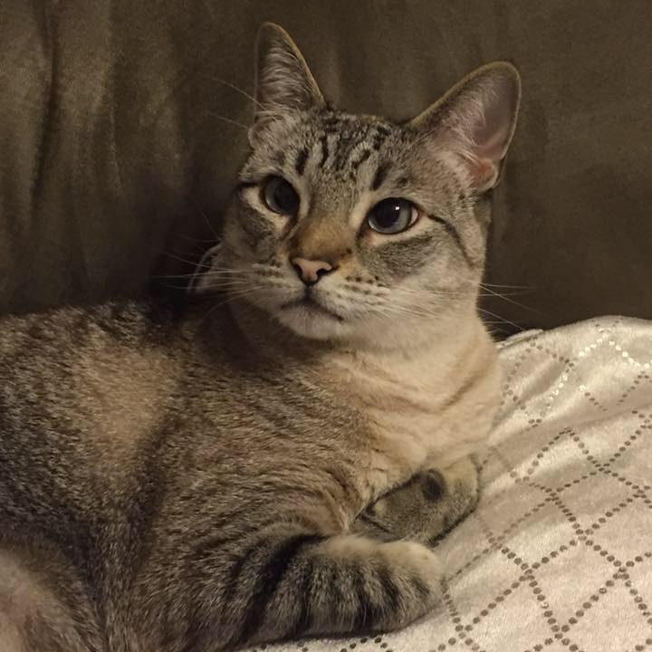
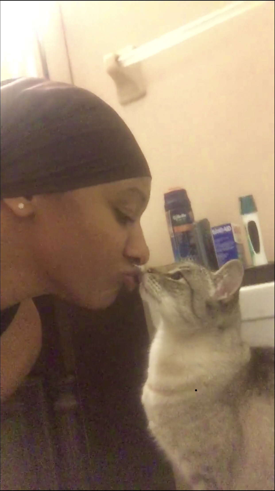
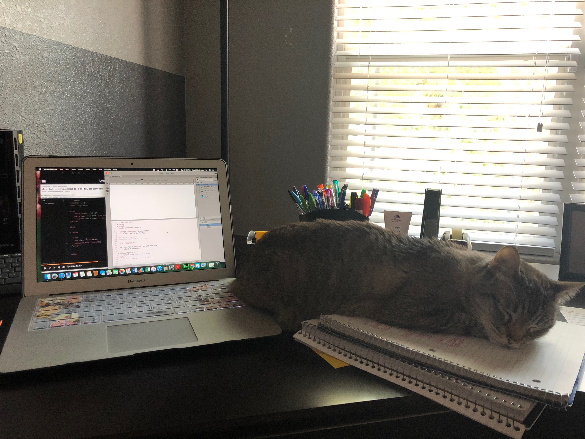

Hope Lioness Brown
Meet Hope
 Hope Lioness Brown is my 7 year old furry baby. She's a referred to as a Lynx Point Siamese cat, which is a mix between Tabby and Siamese.
Hope is absolutely gorgeous and I think she knows it. She grooms herself often, especially if something or someone touches her fur and changes its direction.
She's Just Like Me
 Hope's personality is a lot like mine. Sometimes I call for her, just to see where she is. I start to miss her company pretty quickly. So, I'll find her and pet her for a moment and then return to what I was previsously doing. I didn't realize I was creating a monster. She now mirrors this behavior. She'll meow until she finds me, rub against me once or twice, and then she'll go back to taking a nap elsewhere.
I believe Hope gets her bossiness from me, too. Usually, I beat my husband to bed at night. If he's up late, I'll call for him and tell him that it's bedtime. Well, every night at about 9pm Hope starts meowing. I follow her to see what she needs and she leads me to my bedroom. She's usually content after I explain that I'm not ready for bed yet, but will be soon. She also meows for me to get out of bed in the morning. However, she quiets down for a little while if I tell her I need 5 more minutes.
You've probably guessed by now that we have full conversations with eachother. She's very intelligent and probably understands at least 75% of the things I say. I believe cat's can learn just as much as dogs, however they are more stubborn when it's time to perform. I must admit, I am most proud of teaching her to give me a kiss.
Hope's Favorite Things
 Hope has several consistent ways to entertain herself. She loves to play with balls. Her favorite is a yarn-like ball, but she loves any kind that she can carry in her mouth. While playing, she sometimes starts to meow very loudly. I haven't determined if she's yelling at the ball to be still or if she's losing the game!
Like most cats, Hope gets pretty wild while I'm trying to sleep at night.
She runs all around
⇖ ⇗ ⇘ ⇙
and up & down
⇕
and left & right!
⇔
She also enjoys playing a game that consists of biting my ankles when I walk by. This is something new that she's started and I'm trying to put an end to it now. It hurts!
I would also like for her to let me do my homework without laying on my notebook, Macbook, or keyboard. But that's asking for a lot.
Whenver I'm not feeling well she cuddles up beside me. This is her activity that I love the most. She pretty much becomes my shadow until I'm feeling better. Then she's back to her normal ways, which means she'll cuddle with you on her terms. I love her and her crazy personality. She's my daughter and my best friend!